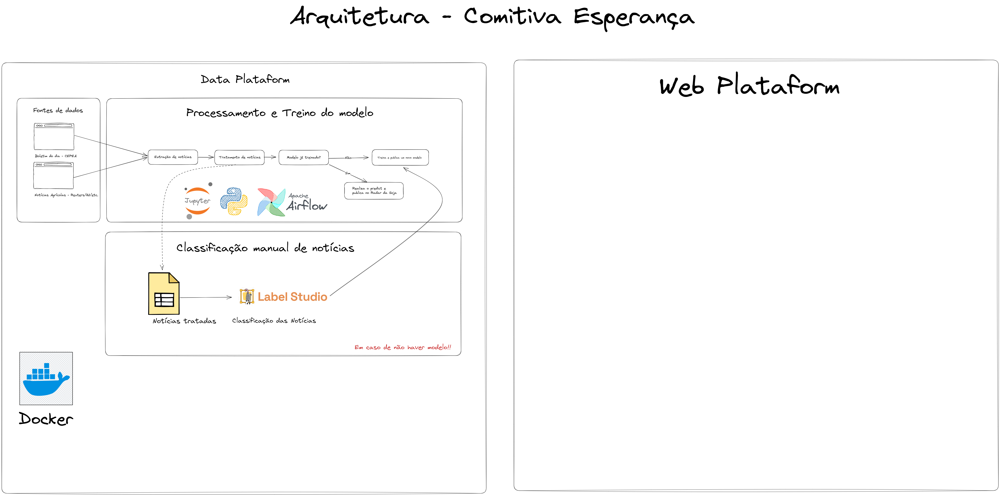

Ferramentas
Ferramentas
O time Comitiva Esperança está utilizando Docker para a criação de containers, e o Docker Compose para a criação de containers multiplataforma. A utilização de Dockers permite que o time possa trabalhar em ambientes isolados, e que possam ser facilmente replicados em outros ambientes. A principal possibilidade é a facilidade em publicar o projeto em servidores Cloud, como o Azure, AWS, Google Cloud, etc.
Arquitetura
A arquitetura do projeto é composta por 3 containers, sendo eles:
- Data Plataform: Container responsável por manter ferramentas de Data Science, como Jupyter, Airflow, Label Studio, etc.
- Backend: Container responsável por manter a API do projeto, que será utilizada para a comunicação com o Frontend.
- Frontend: Container responsável por manter a interface do projeto, que será utilizada para a interação com o usuário.

Apache Airflow
O Apache Airflow é uma plataforma de orquestração de fluxos de trabalho (workflow) de código aberto que permite aos usuários programar, agendar e monitorar tarefas em fluxos de trabalho complexos.
Funcionalidades
- Programação de tarefas em fluxos de trabalho complexos utilizando uma sintaxe simples de Python.
- Agendamento de tarefas baseado em tempo, eventos ou dependências.
- Monitoramento em tempo real do status das tarefas e fluxos de trabalho.
- Gerenciamento de dependências entre tarefas.
- Recuperação automática de falhas de tarefas.
- Integração com diversos serviços de armazenamento e processamento de dados, incluindo Hadoop, Amazon S3 e Google Cloud Storage.
Vantagens
Algumas vantagens de utilizar o Apache Airflow são:
Flexibilidade: o Airflow permite criar fluxos de trabalho complexos com várias tarefas interdependentes de maneira simples e flexível, utilizando a sintaxe de Python.
Escalabilidade: o Airflow pode ser escalado horizontalmente para gerenciar fluxos de trabalho de grande escala, com suporte a múltiplos executores, incluindo local, Celery e Kubernetes.
Monitoramento em tempo real: o Airflow oferece uma interface de usuário web que permite monitorar em tempo real o status das tarefas e fluxos de trabalho, além de gerar métricas e logs para análise.
Comunidade ativa: o Airflow é mantido por uma comunidade de desenvolvedores ativa e tem suporte de grandes empresas, como Airbnb, Google e Lyft, garantindo sua evolução e melhoria contínuas.
Label Studio
Label Studio O Label Studio é uma plataforma de marcação de dados (data labeling) de código aberto que permite criar tarefas de marcação de forma simples e escalável. Algumas de suas funcionalidades incluem:
Funcionalidades
- Criação de projetos de marcação personalizados com configurações específicas.
- Possibilidade de criar modelos de anotação personalizados.
- Integração com ferramentas de treinamento de modelos de machine learning.
- Possibilidade de exportar os dados marcados em diversos formatos, incluindo JSON, CSV e TensorFlow Record.
- Suporte a múltiplas interfaces de usuário, incluindo web, desktop e móvel.
Vantagens
Algumas vantagens de utilizar o Label Studio são:
Flexibilidade: o Label Studio permite criar projetos de marcação personalizados com configurações específicas e modelos de anotação personalizados, adaptados às necessidades específicas do usuário.
Escalabilidade: o Label Studio pode ser utilizado em conjunto com ferramentas de treinamento de modelos de machine learning para lidar com grandes volumes de dados de forma escalável.
Integração: o Label Studio é compatível com diversas ferramentas de machine learning e permite integrar a marcação de dados diretamente ao processo de treinamento de modelos.
Exportação: o Label Studio permite exportar os dados marcados em diversos formatos, tornando fácil o compartilhamento e a utilização desses dados em outros projetos.
Interface de usuário: o Label Studio oferece diversas interfaces de usuário para facilitar a marcação de dados em diferentes plataformas.
Fast API
O FastAPI é um framework de desenvolvimento web de alto desempenho, de código aberto, baseado em Python 3.6+ que utiliza o padrão OpenAPI para construir APIs RESTful. Algumas das suas principais funcionalidades incluem:
Funcionalidades
Roteamento de requisições HTTP utilizando o padrão RESTful. Suporte a especificações OpenAPI e Swagger para documentação de APIs. Validação de tipos de dados utilizando o Pydantic, incluindo conversão automática de tipos de dados, como JSON para objetos Python. Suporte a CORS (Cross-Origin Resource Sharing) para controle de acesso a recursos em outras origens. Integração com diversos serviços de autenticação, como OAuth2 e JWT (JSON Web Tokens). Suporte a ASGI (Asynchronous Server Gateway Interface) para criação de aplicações assíncronas de alto desempenho.
Vantagens
Algumas vantagens de utilizar o FastAPI são:
Alto desempenho: o FastAPI é um dos frameworks mais rápidos disponíveis para Python, oferecendo alto desempenho em aplicações assíncronas.
Tipagem de dados: o FastAPI utiliza o Pydantic para validar tipos de dados automaticamente, tornando mais fácil o desenvolvimento de APIs seguras e confiáveis.
Documentação automática: o FastAPI utiliza especificações OpenAPI e Swagger para gerar documentação automática das APIs, facilitando o desenvolvimento e a manutenção de aplicações.
Autenticação: o FastAPI oferece suporte a diversos serviços de autenticação, tornando mais fácil a implementação de políticas de segurança em aplicações.
Comunidade ativa: o FastAPI é mantido por uma comunidade de desenvolvedores ativa e tem suporte de grandes empresas, garantindo sua evolução e melhoria contínuas.